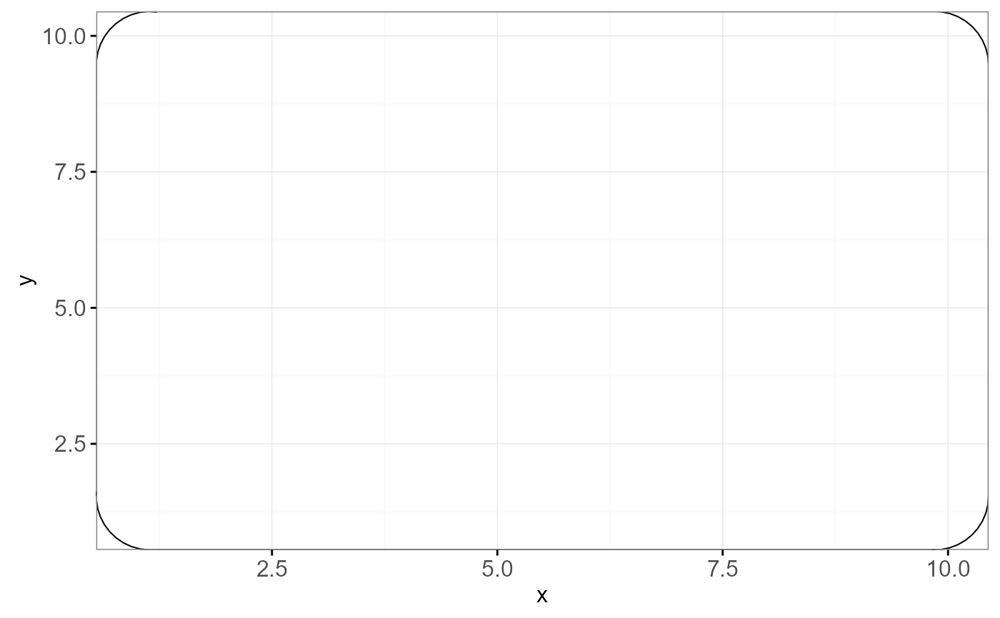
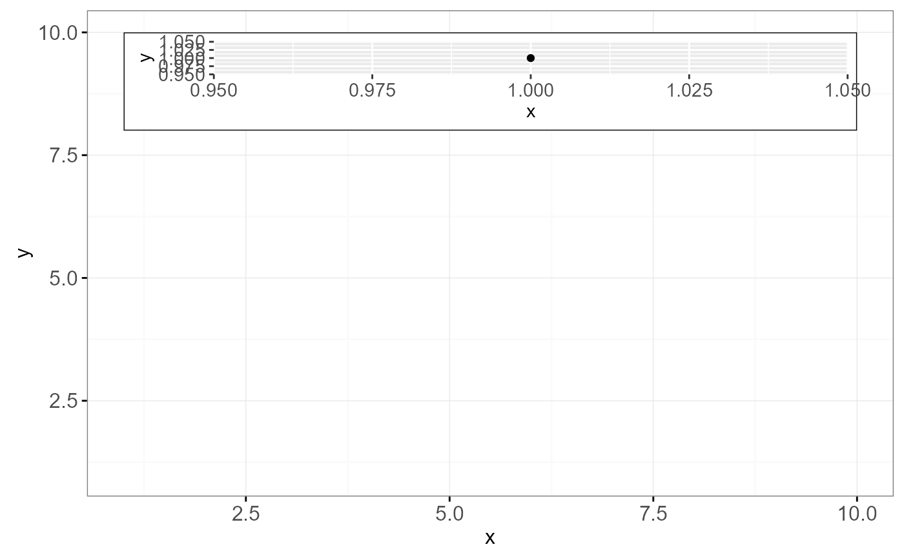

This is a special geom intended for use as static annotations that are the same in every panel. These annotations will not affect scales (i.e. the x and y axes will not grow to cover the range of the grob, and the grob will not be modified by any ggplot settings or mappings).
Arguments
- grob
grob to display
- xmin, xmax
x location (in data coordinates) giving horizontal location of raster
- ymin, ymax
y location (in data coordinates) giving vertical location of raster
Note
annotation_custom expects the grob to fill the entire viewport
defined by xmin, xmax, ymin, ymax. Grobs with a different (absolute) size
will be center-justified in that region.
Inf values can be used to fill the full plot panel (see examples).
Examples
# Dummy plot
df <- data.frame(x = 1:10, y = 1:10)
base <- ggplot(df, aes(x, y)) +
geom_blank() +
theme_bw()
# Full panel annotation
base + annotation_custom(
grob = grid::roundrectGrob(),
xmin = -Inf, xmax = Inf, ymin = -Inf, ymax = Inf
)

# Inset plot
df2 <- data.frame(x = 1 , y = 1)
g <- ggplotGrob(ggplot(df2, aes(x, y)) +
geom_point() +
theme(plot.background = element_rect(colour = "black")))
base +
annotation_custom(grob = g, xmin = 1, xmax = 10, ymin = 8, ymax = 10)
